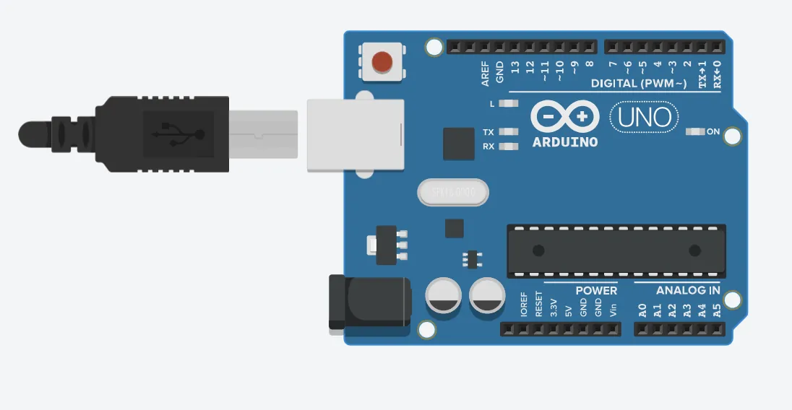
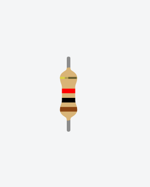
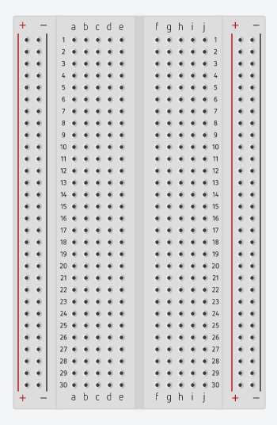
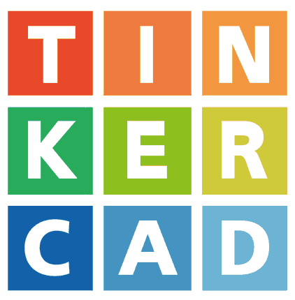

Inicio / Kits de Arduino
Desde qué es la placa hasta dos proyectos completos: el Semáforo Interactivo y el Dado Digital, con código fuente listo para cargar.
La placa Arduino es una tarjeta electrónica programable que funciona como el "cerebro" de nuestros proyectos. Es un circuito pequeño al que le conectas componentes (como botones, sensores, luces LED o motores) y al que le puedes dar órdenes para que ejecute acciones automáticas.
La tarjeta física donde conectas los cables y componentes eléctricos.
La aplicación que instalas en el computador para escribir las instrucciones y cargarlas a la placa mediante un cable USB.

Para armar cualquier kit sin dañar los componentes, debes saber cuánta corriente circula por el circuito y cómo protegerlo.
Un LED no puede limitar la corriente por sí solo. Siempre debes colocar una resistencia en serie (usualmente de 220 ohmnios a 330 ohmnios entre el pin de Arduino y el LED); de lo contrario, el LED o el pin de la placa se quemará.

Así se protege un LED: la resistencia en serie limita la corriente que le llega.
La protoboard es la mesa de trabajo de tus circuitos: en ella conectas los componentes sin soldar.
La protoboard permite montar, probar y desmontar circuitos las veces que necesites, conectando eléctricamente los componentes entre sí y con la placa Arduino, todo sin necesidad de soldar. Por eso es ideal para aprender: un error se corrige moviendo un cable, no cortando una pista.
Sus orificios están conectados internamente por tiras de metal, de forma que:
A cada lado hay dos líneas verticales: una de alimentación y otra de tierra. Conectadas longitudinalmente, funcionan como vías de energía: ahí llevas el 5V y el GND de la placa para alimentar todo el circuito desde cualquiera de los dos lados.
Conectados en columnas verticales de 5 puntos. Al insertar la pata de un componente y un cable en la misma columna, ambos quedan conectados entre sí sin ningún cable adicional.
La ranura que divide la protoboard en dos mitades permite montar circuitos integrados (chips): cada pata del chip queda en su propia columna de 5 puntos, lista para conectar los demás componentes alrededor.
Los rieles laterales (alimentación y tierra, a cada lado) reparten la energía a todo el circuito, y cada columna central une las patas de los componentes que van juntos.

El código de Arduino (basado en C/C++) se compone de dos funciones principales obligatorias:
setup()Se ejecuta una sola vez al encender la placa. Aquí configuras los pines (por ejemplo, pinMode(ledPin, OUTPUT) declara el pin 13 como una salida de energía).
loop()Se repite en bucle infinito mientras la placa tenga energía. Aquí ocurre la lógica principal: encender y apagar LEDs, leer sensores, esperar tiempos, etc.
Las instrucciones clave que verás en el ejemplo:
digitalWrite(pin, HIGH): envía 5V al pin (enciende el LED).digitalWrite(pin, LOW): envía 0V al pin (apaga el LED).delay(ms): pausa en milisegundos (1000 ms = 1 segundo).int ledPin = 13;: declara una variable y le asigna el pin digital 13.digitalWrite + delay(1000) en blink.ino.
// 1. Declaración de variables y pines
int ledPin = 13; // Asignamos el pin digital 13 a una variable
// 2. Función setup: Se ejecuta UNA sola vez al encender la placa
void setup() {
pinMode(ledPin, OUTPUT); // Configura el pin 13 como una SALIDA de energía
}
// 3. Función loop: Se repite en bucle INFINITO mientras la placa tenga energía
void loop() {
digitalWrite(ledPin, HIGH); // Envía 5V al pin (Enciende el LED)
delay(1000); // Espera 1000 milisegundos (1 segundo)
digitalWrite(ledPin, LOW); // Envía 0V al pin (Apaga el LED)
delay(1000); // Espera 1 segundo
}No siempre hay recursos físicos: simula el circuito completo en el navegador antes de armarlo.

El más sencillo y amigable, ideal para empezar con Arduino UNO.
Abrir TinkercadHaz clic en cada kit para ver componentes, conexión y el código listo para copiar.
int pinROJO = 13; // LED rojo
int pinAMARILLO = 12; // LED amarillo
int pinVERDE = 11; // LED verde
void setup() {
pinMode(pinVERDE, OUTPUT);
pinMode(pinAMARILLO, OUTPUT);
pinMode(pinROJO, OUTPUT);
}
void loop() {
// FASE 1: VERDE (paso) durante 4 segundos
digitalWrite(pinVERDE, HIGH);
delay(4000);
digitalWrite(pinVERDE, LOW);
// FASE 2: AMARILLO (precaución) 1 segundo
digitalWrite(pinAMARILLO, HIGH);
delay(1000);
digitalWrite(pinAMARILLO, LOW);
// FASE 3: ROJO (pare) durante 6 segundos
digitalWrite(pinROJO, HIGH);
delay(6000);
digitalWrite(pinROJO, LOW);
// El ciclo se repite automáticamente
}#define PULSADOR 2
// Matriz de segmentos: qué segmentos encender (1) o apagar (0)
// para formar cada dígito en el display de 7 segmentos.
byte numero[10][8] = {
{ 1,1,1,1,1,1,0,0 }, // 0
{ 0,1,1,0,0,0,0,0 }, // 1
{ 1,1,0,1,1,0,1,0 }, // 2
{ 1,1,1,1,0,0,1,0 }, // 3
{ 0,1,1,0,0,1,1,0 }, // 4
{ 1,0,1,1,0,1,1,0 }, // 5
{ 1,0,1,1,1,1,1,0 }, // 6
{ 1,1,1,0,0,0,0,0 }, // 7
{ 1,1,1,1,1,1,1,0 }, // 8
{ 1,1,1,0,0,1,1,0 } // 9
};
void setup() {
Serial.begin(9600);
for (int i = 3; i < 10; i++) pinMode(i, OUTPUT);
pinMode(PULSADOR, INPUT);
randomSeed(analogRead(A0));
}
void loop() {
if (digitalRead(PULSADOR) == HIGH) {
int dado = random(1, 7);
for (int e = 0; e < 8; e++)
digitalWrite(e + 3, numero[dado][e]);
delay(500); // evita lecturas dobles por rebote
}
}// --- Kit 3: Control de Frecuencia con Potenciómetro ---
// Variable para almacenar la lectura analógica del potenciómetro
int valorSensor = 0;
void setup(){
// Configuración del pin A0 como entrada analógica
pinMode(A0, INPUT);
// Configuración del pin 13 como salida digital para el LED
pinMode(13, OUTPUT);
}
void loop(){
// 1. Lee el valor del potenciómetro en A0 (Devuelve un rango entre 0 y 1023)
valorSensor = analogRead(A0);
// 2. Enciende el LED
digitalWrite(13, HIGH);
// 3. Espera un tiempo (en milisegundos) proporcional al valor del potenciómetro
delay(valorSensor);
// 4. Apaga el LED
digitalWrite(13, LOW);
// 5. Mantiene el LED apagado durante el mismo tiempo antes de repetir
delay(valorSensor);
}// --- Kit 4: Pantalla LCD 16x2 ---
// Incluimos la librería oficial para el manejo de pantallas LCD
#include <LiquidCrystal.h>
// Inicializamos la librería definiendo los pines conectados:
// LiquidCrystal(RS, Enable, D4, D5, D6, D7)
LiquidCrystal lcd(2, 3, 4, 5, 6, 7);
void setup(){
// Configura el número de columnas (16) y filas (2) de la pantalla
lcd.begin(16, 2);
// Imprime el mensaje inicial en la pantalla
lcd.print("Hola estudiantes");
}
void loop(){
// En este laboratorio el mensaje es estático, por lo que el loop permanece vacío.
}